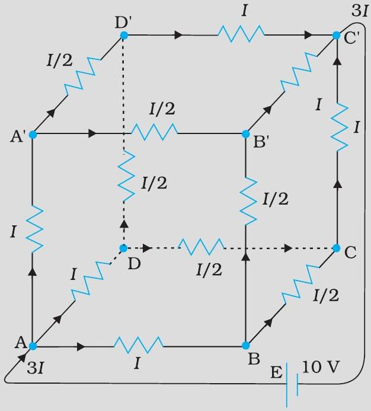
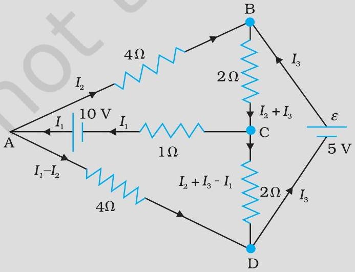
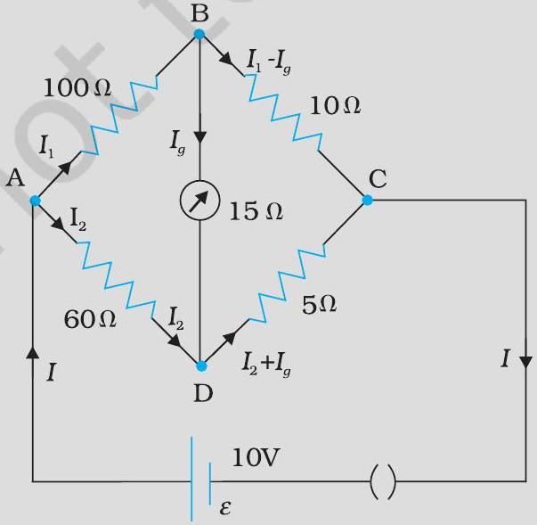
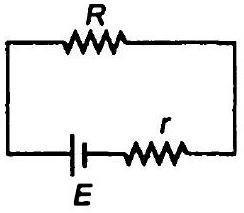
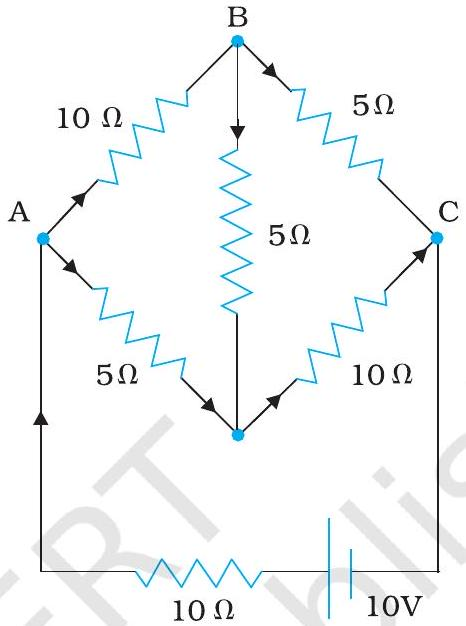
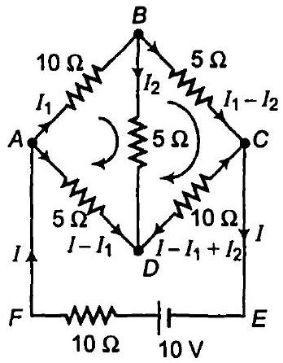
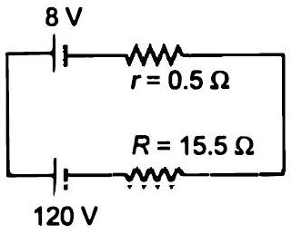

1.0 × 10⁻⁷ m² अनुप्रस्थ काट क्षेत्रफल वाले ताँबे के तार में 1.5 A धारा प्रवाहित हो रही है। इसमें चालक इलेक्ट्रॉनों की औसत अपवाह चाल का आकलन कीजिए। मान लीजिए कि ताँबे का प्रत्येक परमाणु धारा के प्रवाह में एक चालक इलेक्ट्रॉन का योगदान करता है। ताँबे का घनत्व 9.0 × 10³ kg / m³ तथा इसका परमाणु द्रव्यमान 63.5 u है।
ऊपर निकाली गई अपवाह चाल की निम्नलिखित उदाहरणों से तुलना कीजिए। (i) सामान्य तापों पर ताँबे के परमाणुओं की तापीय चाल (ii) चालक के अनुदिश विद्युत क्षेत्र की संचरण चाल जो अपवाह गति उत्पन्न करती है।
उदाहरण 3.1 में कुछ ऐम्पियर धारा के परिसर में किसी इलेक्ट्रॉन की अपवाह गति केवल कुछ mm s⁻¹ ही आकलित की गई है। तब परिपथ बंद करते ही लगभग उसी क्षण धारा कैसे स्थापित हो जाती है?
किसी चालक के अंदर इलेक्ट्रॉन अपवाह विद्युत क्षेत्र में इलेक्ट्रॉनों द्वारा अनुभव किए गए बल के कारण उत्पन्न होता है। लेकिन बल द्वारा त्वरण उत्पन्न होना चाहिए। तब इलेक्ट्रॉन अपरिवर्ती औसत अपवाह वेग क्यों प्राप्त कर लेते हैं?
यदि इलेक्ट्रॉन का अपवाह वेग इतना कम है और इलेक्ट्रॉन का आवेश भी कम है तो फिर किसी चालक में हम अधिक मात्रा में धारा कैसे प्राप्त कर सकते हैं?
जब किसी धातु में इलेक्ट्रॉन कम विभव से अधिक विभव की ओर अपवाह करते हैं तो क्या इसका तात्पर्य यह है कि धातु में सभी मुक्त इलेक्ट्रॉन एक ही दिशा में गतिमान हैं?
क्या उत्तरोत्तर संघट्टों ( धातु के धनायनों के साथ) के बीच इलेक्ट्रॉनों के पथ (i) विद्युत क्षेत्र की अनुपस्थिति में, (ii) विद्युत क्षेत्र की उपस्थिति में, सरल रेखीय हैं?
किसी विद्युत टोस्टर में निक्रोम के तापन अवयव का उपयोग होता है। जब इससे एक नगण्य लघु विद्युत धारा प्रवाहित होती है तो कक्ष ताप पर (27.0° C) इसका प्रतिरोध 75.3 Ω पाया जाता है। जब इस टोस्टर को 230 V आपूर्ति से संयोजित करते हैं तो कुछ सेकंड में परिपथ में 2.68 A की स्थायी धारा स्थापित हो जाती है। निक्रोम-अवयव का स्थायी ताप क्या है? निक्रोम को सम्मिलित ताप परिसर में प्रतिरोध ताप गुणांक 1.70 × 10⁻⁴ ° C⁻¹ है।
प्लैटिनम प्रतिरोध तापमापी के प्लैटिनम के तार का प्रतिरोध हिमांक पर 5 Ω तथा भाप बिंदु पर 5.23 Ω है। जब तापमापी को किसी तप्त-ऊष्मक में प्रविष्ट कराया जाता है तो प्लैटिनम के तार का प्रतिरोध 5.795 Ω हो जाता है। ऊष्मक का ताप परिकलित कीजिए।
10 V तथा नगण्य आंतरिक प्रतिरोध की बैटरी एक घनीय परिपथ जाल (नेटवर्क) के विकर्णतः सम्मुख कोनों से जुड़ी है। परिपथ जाल में 1 Ω प्रतिरोध के 12 प्रतिरोधक हैं (चित्र 3.16)। परिपथ जाल का समतुल्य प्रतिरोध तथा घन के प्रत्येक किनारे के अनुदिश विद्युत धारा ज्ञात कीजिए।

चित्र 3.17 में दिखलाए गए नेटवर्क की प्रत्येक शाखा में धारा ज्ञात कीजिए।

व्हीटस्टोन सेतु की चार भुजाओं (चित्र 3.19) के प्रतिरोध निम्नवत हैं: AB = 100 Ω, BC = 10 Ω, CD = 5 Ω तथा DA = 60 Ω । 15 Ω प्रतिरोध के एक गैल्वेनोमीटर को BD के बीच जोड़ा गया है। गैल्वेनोमीटर से प्रवाहित होने वाली धारा को परिकलित कीजिए। AC के मध्य 10 V विभवांतर है।

किसी कार की संचायक बैटरी का विद्युत वाहक बल 12 V है। यदि बैटरी का आंतरिक प्रतिरोध 0.4 Ω हो, तो बैटरी से ली जाने वाली अधिकतम धारा का मान क्या है?
10 V विद्युत वाहक बल वाली बैटरी जिसका आंतरिक प्रतिरोध 3 Ω है, किसी प्रतिरोधक से संयोजित है। यदि परिपथ में धारा का मान 0.5 A हो, तो प्रतिरोधक का प्रतिरोध क्या है? जब परिपथ बंद है तो सेल की टर्मिनल वोल्टता क्या होगी?

कमरे के ताप (27.0° C) पर किसी तापन-अवयव का प्रतिरोध 100 Ω है। यदि तापन-अवयव का प्रतिरोध 117 Ω हो तो अवयव का ताप क्या होगा? प्रतिरोधक के पदार्थ का ताप-गुणांक 1.70 × 10⁻⁴ ° C⁻¹ है।
15 मीटर लंबे एवं 6.0 × 10⁻⁷ m² अनुप्रस्थ काट वाले तार से उपेक्षणीय धारा प्रवाहित की गई और इसका प्रतिरोध 5.0 Ω मापा गया। प्रायोगिक ताप पर तार के पदार्थ की प्रतिरोधकता क्या होगी?
सिल्वर के किसी तार का 27.5 °C पर प्रतिरोध 2.1 Ω और 100° C पर प्रतिरोध 2.7 Ω है। सिल्वर की प्रतिरोधकता ताप-गुणांक ज्ञात कीजिए।
निक्रोम का एक तापन-अवयव 230 V की सप्लाई से संयोजित है और 3.2 A की प्रारंभिक धारा लेता है जो कुछ सेकंड में 2.8 A पर स्थायी हो जाती है। यदि कमरे का ताप 27.0° C है तो तापन-अवयव का स्थायी ताप क्या होगा? दिए गए ताप-परिसर में निक्रोम का औसत प्रतिरोध का ताप-गुणांक 1.70 × 10⁻⁴ ° C⁻¹ है।
चित्र 3.20 में दर्शाए नेटवर्क की प्रत्येक शाखा में प्रवाहित धारा ज्ञात कीजिए।


8 V विद्युत वाहक बल की एक संचायक बैटरी जिसका आंतरिक प्रतिरोध 0.5 Ω है, को श्रेणीक्रम में 15.5 Ω के प्रतिरोधक का उपयोग करके 120 V के dc स्रोत द्वारा चार्ज किया जाता है। चार्ज होते समय बैटरी की टर्मिनल वोल्टता क्या है? चार्जकारी परिपथ में प्रतिरोधक को श्रेणीक्रम में संबद्ध करने का क्या उद्देश्य है?

किसी ताँबे के चालक में मुक्त इलेक्ट्रॉनों का संख्या घनत्व उदाहरण 3.1 में 8.5 × 10²⁸ m³ आकलित किया गया है। 3 m लंबे तार के एक सिरे से दूसरे सिरे तक अपवाह करने में इलेक्ट्रॉन कितना समय लेता है? तार की अनुप्रस्थ-काट 2.0 × 10⁻⁶ m² है और इसमें 3.0 A धारा प्रवाहित हो रही है।